Обращение — это запрос внешнего клиента, зафиксированный в приложении Обращения. Срок его обработки ограничен нормативами, которые задаются в справочнике SLA при первичной настройке решения.
Каждое обращение:
- содержит данные о клиенте и его компании, текст запроса и историю взаимодействий по предыдущим обращениям;
- позволяет оператору переписываться с клиентом прямо в карточке обращения;
- связано с сервисом, к которому относится запрос. Автоматически направляется ответственному за сервис сотруднику, который загружен меньше других;
- проверяется на соответствие нормативам SLA, которые устанавливают максимальное время реакции на запрос клиента и на его решение.
Обращение создаётся автоматически:
- из сценария настроенного бота;
- если клиент создал обращение на портале;
- если запрос поступил в линию, к которой привязан процесс Создание обращения из линии. Тогда данные клиента и его сообщения добавятся в созданное обращение автоматически. Оператору сессии удобно работать и переписываться с клиентом напрямую из карточки обращения, не переходя в сессию в разделе Линии.
Также обращение можно создать вручную, например, если клиент позвонил по телефону.
Работа с обращениями ведется на главной странице раздела и в приложении Обращения.
Главная страница
Это основное рабочее место оператора. Состоит из двух вкладок: Обращения и Мои задачи.
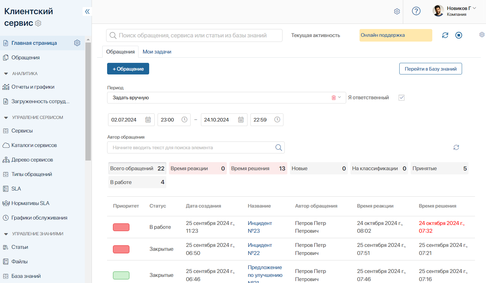
Вкладка «Обращения»
На этой вкладке можно:
- создать новое обращение;
- перейти в Базу знаний;
- открыть карточку обращения.
По умолчанию здесь показаны все обращения за текущий месяц, где вы указаны как ответственный. Вы можете сформировать список по параметрам, указав:
- Период отображения — выберите одну из доступных опций: Последний час, Сегодня, Вчера, Текущая неделя, Прошлая неделя, Прошлый месяц. Также можно указать период вручную;
- Автора обращения — введите имя клиента в поле или нажмите значок лупы и выберите автора из списка;
- Ответственного — снимите флажок Я ответственный и выберите нужного сотрудника.
Получив список по заданным параметрам, можно посмотреть статистику: количество обращений по каждому статусу, а также количество обращений с просроченным временем реакции и решения. Такие обращения дополнительно отмечены в списке красным цветом.
Вкладка «Мои задачи»
Здесь отображаются активные задачи, где вы указаны как исполнитель или участник. Можно работать с ними напрямую на главной странице, не переходя в раздел Задачи.
Установить текущую активность
Перед началом работы в правом верхнем углу страницы нажмите значок и выберите активность, например, Выезд к клиенту или На совещании. Меняйте активность в течение дня, чтобы фиксировать время, потраченное на каждый вид деятельности.
В конце смены нажмите , чтобы остановить счетчик.
Общее время по каждой активности можно посмотреть в приложении Активность сотрудника.
Приложение «Обращения»
Все записи в приложении Обращения по умолчанию распределены по папкам:
- Высокий приоритет;
- У меня в работе;
- Я ответственный (все статусы).
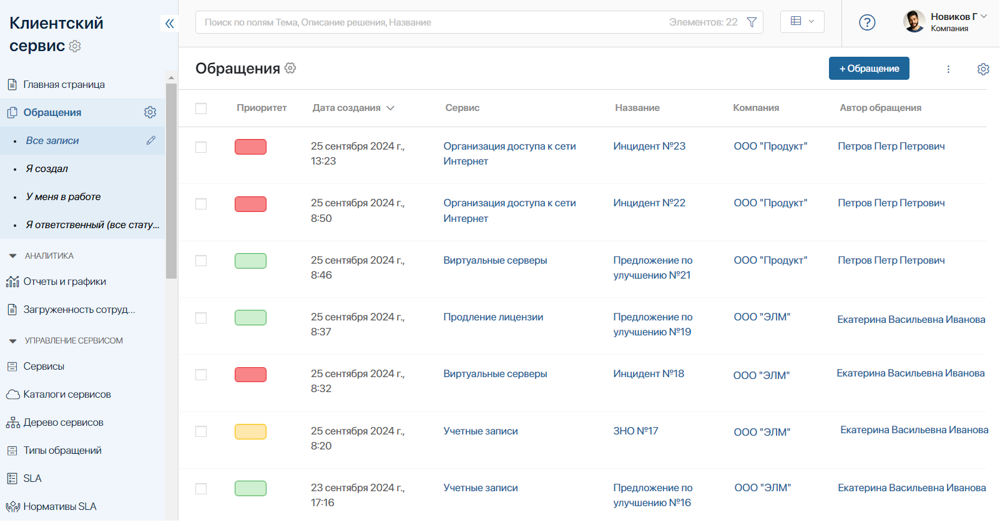
Администратор может сформировать другой набор папок, например, по приоритетам.
По умолчанию записи отображаются в виде таблицы. Чтобы изменить способ отображения на канбан-доску, нажмите 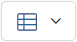 вверху страницы.
Вы можете отфильтровать обращения, используя строку поиска. Чтобы отсортировать записи в таблице и изменить набор отображаемых полей, в правом верхнем углу страницы нажмите и выберите Настройка таблицы. В открывшемся окне:
- укажите параметры обращения, которые хотите видеть в списке;
- укажите параметр, по которому записи будут сортироваться;
- выберите тип сортировки, по возрастанию или убыванию.
Чтобы перейти в карточку обращения, нажмите на его название.
Статусы обращения
Статусы помогают отслеживать работу с обращениями. Их смена настроена в бизнес-процессах, привязанных к приложению Обращения, но администратор может позволить изменять их вручную.
Следующие статусы настроены по умолчанию:
- Новое — присваивается сразу после создания обращения и используется только в логике бизнес-процесса. Сразу же меняется на статус Принято или На классификации;
- На классификации — присваивается обращению, созданному автоматически в бизнес-процессе Создание обращения из линии. Оператору нужно указать сервис и тип обращения, чтобы определить ответственного и тем самым классифицировать обращение;
- Принято — этот статус присваивается, если обращение классифицировано или создано ботом, сотрудником или клиентом на портале. Ответственный получает сообщение о новом обращении. С момента присвоения этого статуса начинается отсчёт времени реакции и времени решения;
- В работе — ответственный взял обращение в работу. Время реакции зафиксируется в карточке обращения;
- В ожидании — работа с обращением приостановлена, счётчик времени решения временно останавливается;
- Решено — запрос обработан. Время решения зафиксируется в карточке обращения.
Если максимальное время реакции или решения истекает, ответственному поступает напоминание. Когда время вышло, может сработать эскалация, если она настроена в приложении SLA.
Создать обращение
Автоматически обращение создаётся в следующих случаях:
- в момент поступления запроса в линию;
- из сценария настроенного бота;
- если клиент создал обращение на портале.
Чтобы создать обращение вручную, например, если клиент позвонил по телефону, на главной странице раздела или в приложении Обращения нажмите кнопку + Обращение. В открывшемся окне:
- выберите тип обращения. Приоритет определится автоматически в зависимости от выбранного типа;
- выберите сервис. Ответственный будет указан автоматически;
- вы можете выбрать предмет обращения из справочника Продукты раздела CRM;
- укажите тему и текст обращения;
- при необходимости приложите файл;
- укажите данные клиента.
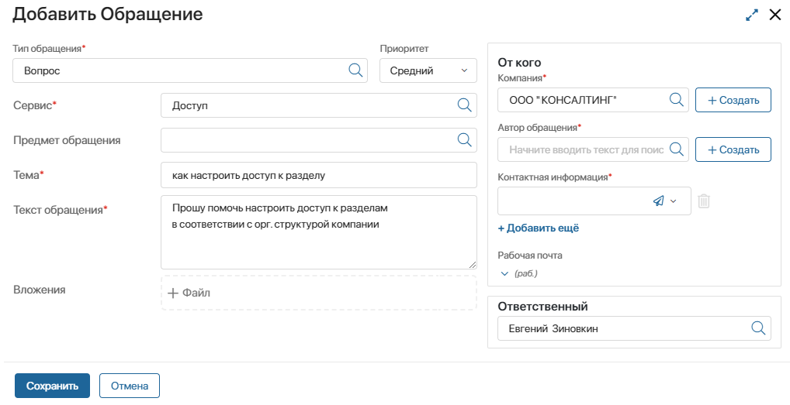
После создания обращению присваивается статус Принято, а ответственный сотрудник получает уведомление на электронную почту и в #ленту. Также начинается отсчёт времени реакции и времени решения.
Карточка обращения
Оператор работает с обращением в его карточке:
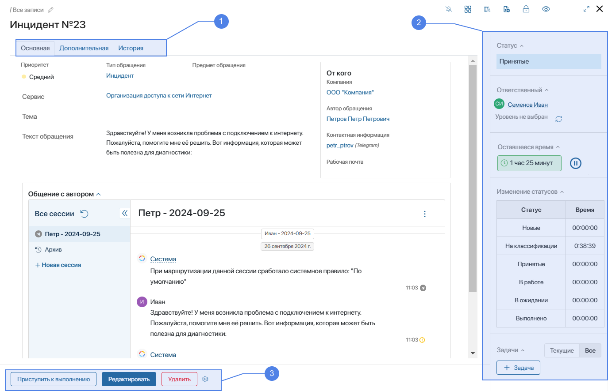
- Карточка обращения состоит из трёх вкладок: Основная, Дополнительная, История.
- На боковой панели можно:
- просмотреть дату создания обращения, текущий статус обращения и ответственного, таймер отсчёта нормативного времени;
- выбрать уровень поддержки;
- приостановить работу с обращением;
- посмотреть, сколько времени обращение находилось в каждом статусе;
- привлечь других сотрудников к работе с обращением, поставив им задачи.
- Внизу карточки размещены кнопки для работы с обращением.
Вкладка «Основная»
На этой вкладке можно просмотреть приоритет обращения, данные клиента, тип и тему обращения, его описание. В виджете Общение с автором оператор сессии может вести переписку с клиентом. Это удобно, т. к. позволяет не переходить в раздел Линии и выполнять всю работу с обращением в одном месте.
Вкладка «Дополнительная»
На этой вкладке можно:
- ознакомиться с нормативами SLA и сравнить их с фактическими показателями работы с обращением;
- просмотреть сообщения в ленте обращения;
- ознакомиться с историей взаимодействия с клиентом по ранее поступившим от него обращениям.
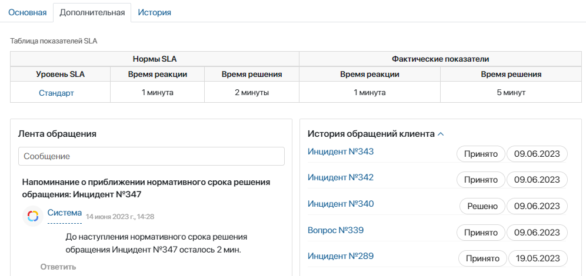
Вкладка «История»
Здесь отображается история изменений по обращению. При необходимости вы можете проверить, какие именно параметры менялись, и кто автор изменений. Для удобства здесь можно:
- — отфильтровать данные по параметрам и действиям;
- — экспортировать список изменений в файл формата .xlsx или .pdf.
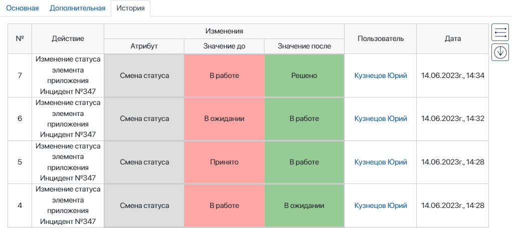
Действия с обращением
В карточке обращения можно выполнить следующие действия:
- Классифицировать — доступно в карточке обращения, автоматически созданного при поступлении запроса в линию. Оператор может дополнить данные по запросу и указать вид сервиса, согласно которому обращение поступит ответственному;
- Выбрать уровень поддержки — назначить обращение определённой группе операторов;
- Приступить к выполнению — доступно в карточке нового обращения, в том числе после его классификации, фиксирует фактическое время реакции;
- Выполнено — завершить работу с обращением. При этом фиксируется время решения;
- Приостановить работу с обращением — доступно только для ответственного за обращение. Позволяет приостановить таймер отсчёта нормативного времени для обработки запроса.
По умолчанию в карточке обращения доступны стандартные действия Редактировать и Удалить. Администратор системы может изменить набор доступных кнопок на карточке обращения.
Классифицировать обращение
Если клиент обратился в линию:
- создаётся обращение со статусом На классификации;
- оператор получает сообщение о классификации обращения, чтобы дополнить его параметры и тем самым направить его ответственному.
Откройте карточку обращения. Данные клиента и его сообщение будут заполнены по умолчанию. Нажмите кнопку Классифицировать и в открывшемся окне укажите дополнительные данные, выберите тип обращения, а также сервис.
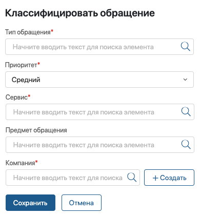
После классификации обращение поступит ответственному, который привязан к указанному сервису. Статус обращения изменится на Принято.
Выбрать уровень поддержки
Каждое принятое обращение можно назначить на подходящий уровень поддержки. Например:
- Первая линия — для общих вопросов;
- Вторая линия — для сложных технических задач.
Тогда обращение поступит определённой группе операторов.
Нажмите значок  на боковой панели и выберите нужный уровень.
на боковой панели и выберите нужный уровень.
Приостановить работу с обращением
Ответственный за обращение может приостановить работу с ним, например, если клиент взял паузу для поиска данных по своему запросу. При этом обращению присвоится статус В ожидании.
- На правой боковой панели нажмите кнопку .
- В открывшемся окне введите причину приостановки, а также планируемое время ожидания. По истечении этого времени обращение автоматически получит статус В работе, а ответственному поступит оповещение.
- Если вы ведёте переписку с клиентом с помощью линий и хотите отправить ему сообщение о приостановке работы над обращением, нажмите Да.
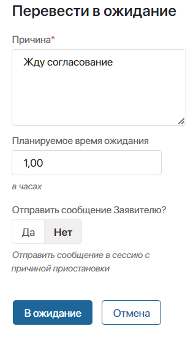
- Нажмите кнопку В ожидание.
После этого на боковой панели карточки обращения отобразится причина приостановки и статус таймера. Чтобы продолжить работу с обращением, нажмите .
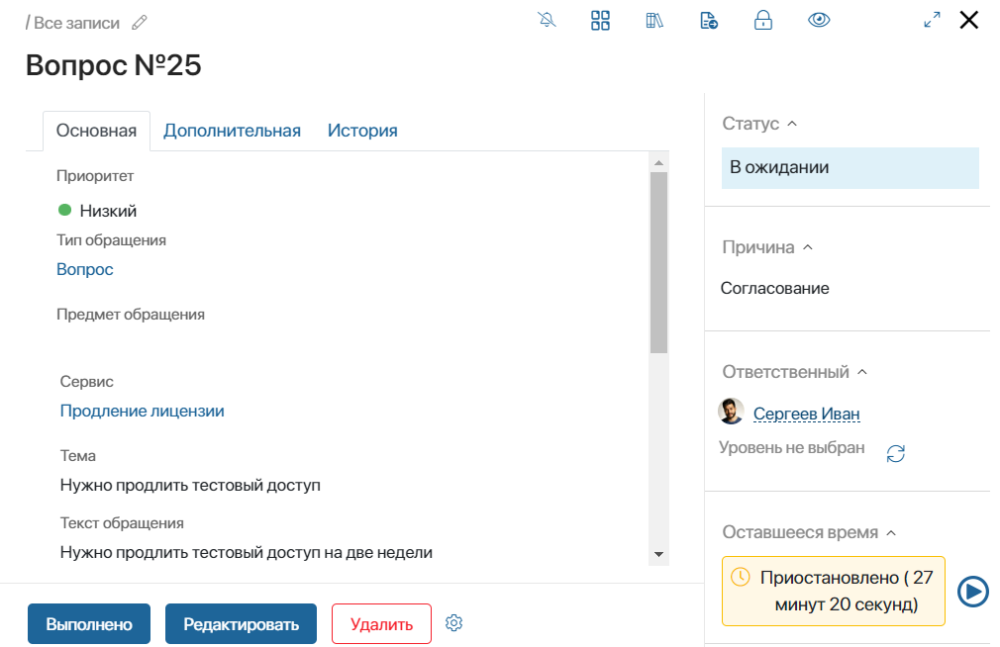
База знаний для работы с обращениями
Чтобы ускорить работу с обращениями, сотрудники могут использовать статьи из приложения Статьи. Здесь можно разместить информацию, полезную как сотрудникам, так и клиентам, например, ответы на часто используемые вопросы. Опубликованные статьи клиенты могут просмотреть на портале. Неопубликованные статьи доступны только в разделе Клиентский сервис для внутреннего пользования.
Чтобы создать статью, нажмите + Статьи и в открывшемся окне:
- Включите опцию Публичная статья, чтобы информация стала доступна на портале.
- Укажите сервис и продукт, про который написана статья. Это поможет быстрее найти статью в базе.
- Напишите текста статьи и, при необходимости, добавьте изображения, ссылки или файлы.
Созданную статью можно отредактировать или удалить.
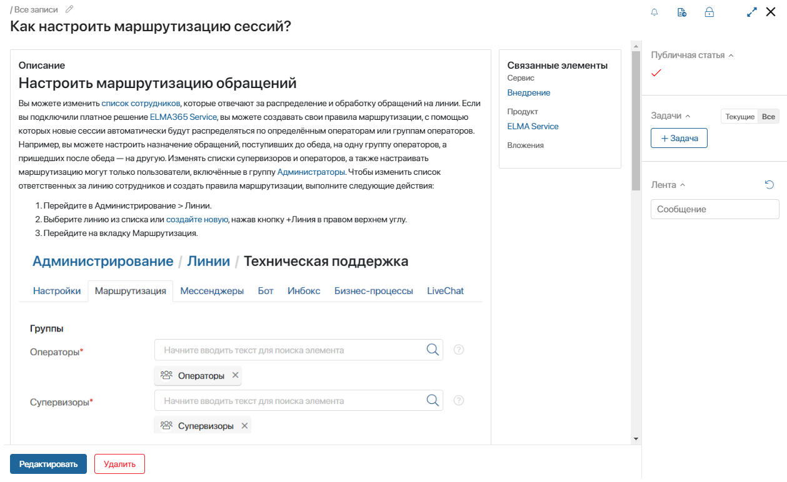
После публикации клиенты смогут искать статьи на портале с помощью фильтров по названию, продукту или сервису. Список всех доступных статей клиент можно открыть, нажав кнопку Открыть статьи.